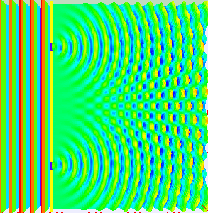
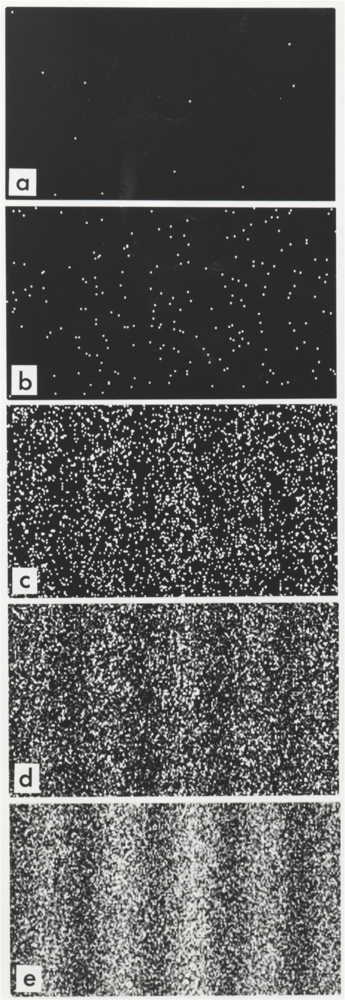
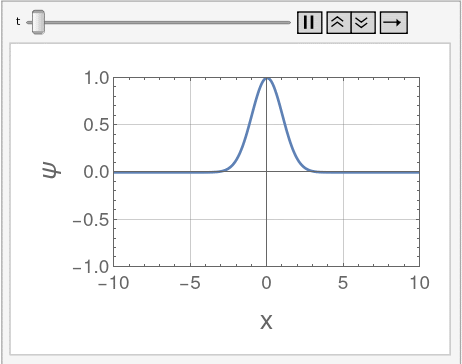

Images and GIFs
Interfence Pattern from Generic Waves
This is an animation of the double-slit experiment. Waves move from the left to the right toward a barrier that contains two slits. On the other side of the slits, we have a film that records where the waves hit. The waves add together constructively and destructively to produce an interference pattern on the film.

Credit: Dr. Fu-Kwun Hwang
For more information, please see https://www.phy.ntnu.edu.tw/~hwang/hwang.html
For more information, please see https://www.phy.ntnu.edu.tw/~hwang/hwang.html
Interfence Pattern from Electrons
This is a static image of the double-slit experiment. Instead of emitting waves, however, electrons are emitted one at a time toward the slits. (PLease read the blurb describing the GIF above.) The electrons, which have wave-like properties, form an interference pattern on the film.

This is a real interference pattern from electrons, produced by Dr. Akira Tonomura.
For some more information, please see https://www.physics.unlv.edu/~jeffery/astro/quantum/qm_double_slit.html
For some more information, please see https://www.physics.unlv.edu/~jeffery/astro/quantum/qm_double_slit.html
The Nonrelativistic Free-Particle Wavefunction
This is a GIF of the free-particle wavefunction in standard non-relativistic quantum mechanics.

This is my own creation, built using Mathematica. Here I take the token values m = ω = ħ = 1.